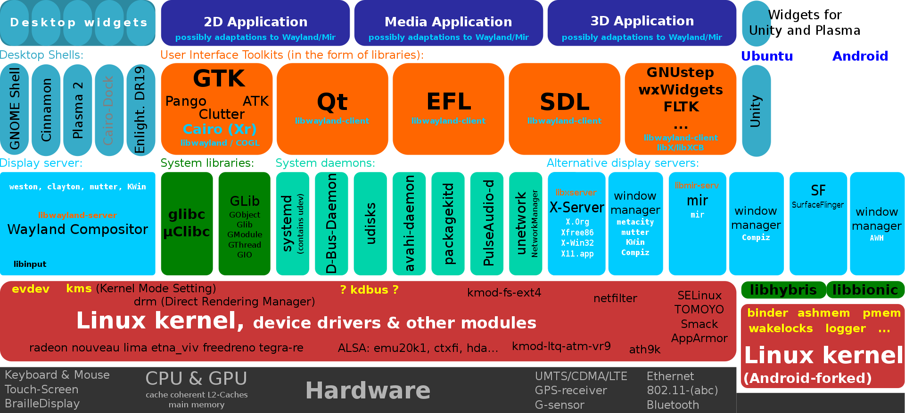
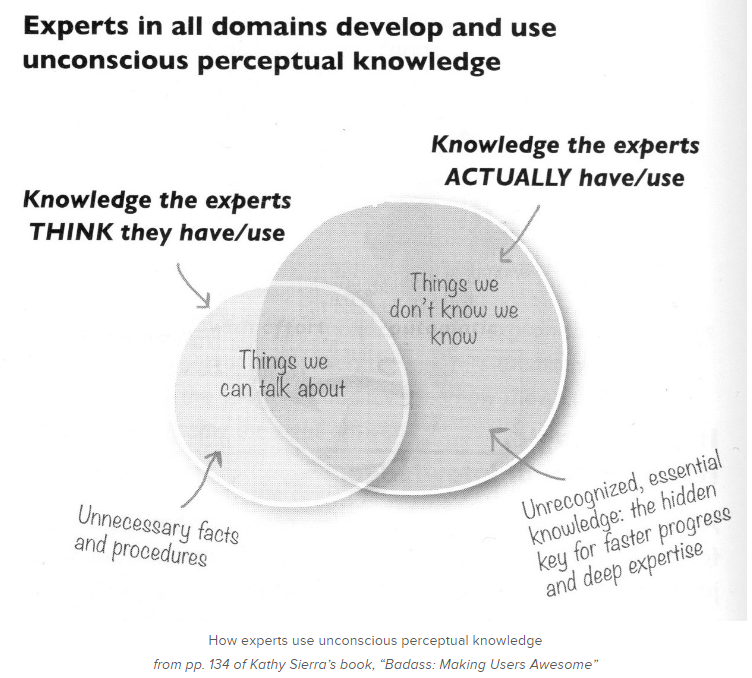

The goal of this essay is to enable the reader to be able to establish a baseline understanding as to code reproducibility in programming and the necessity for creating environments that can be deployed on any platform that may be included in the deployment audience. Additionally, this essays covers the use of tools designed for creating elegant and professional looking code that can be easily transferred from drawing to code and tested to meet performance criteria. This essay is a basic introduction into the principles that guide modern development with an implementation in the Python language. An effort will be make to ensure that this can be applied to other languages when possible.
The computer is broken down into a kernel that connects the hardware with the applications and services that you want to run. The following picture illustrates the point:

The goal of this essay is to enable the reader to be able to understand what problems that professional developers, specifically in the context of python developers face. This is for a more general audience as different python developers can varying problems based on their application such as optimization challenges or package management problems. There are more comprehensive ways to cover these and they require a lot of discourse to fully unpack (the unintended pun being that packages are unpacked to have access to their classes, functions, and methods). This essay will cover what problems developers run in the implementation of their ideas into code and the what solutions are used to solve these problems. This is not specific to computer scientists, rather these principles affect all people who perform technical work in the coming years as programming proficiency has developed into an almost universal requirement for any STEM disciplines.
The problems that people run into programming generally is code reproducibility, Code Maintenance, Code communication, and code comprehension. The solutions are then applied to these categories based on popularity, ease of use, and applicability. First, code reproducibility problems occur when someone tries to hand another person code and they are not able to set your computer up like theirs. Second, Code Maintenance problems occur when code must be utilized over a period of time outside of immediate use which leads to the problems of making sure the infrastructure still supports the operation of your code. This is especially relevant after some code needs to reconfigured to operate a different way or have additional functionality.
Note: that code reproducibility and Code Maintenance are very closely linked which is why it is important that great care is taken in making sure that programs are developed in well organized environments almost like lab experiments.
Third, Code communication is when more than one person is working on code then how do you make sure that your change won't screw up the codebase. Consider the fact that multiple people may be working on different functions that are going to placed in the same document. How can you make sure that the solution that you've made still works? Fourth and lastly, code comprehension problems occur when people are unable to understand the code they are presented because it is too complex, foreign, or proper documentation is not available.
code reproducibility in the modern world involves using dependencies. This is simply a fact that one must accept since the code you develop will always rely on some other part that must be trusted and understood to whatever degree the application requires. Fortunately, this problem can be documented such that similar to citing you sources; you can specify your dependencies so others can analyze and recreate your work. The issue with code reproducibility is version control for dependencies which is an important problem that requires the use of solutions like package management tools like poetry and Conda for Python. Understanding how to set up and implement dependency management tools and environment management for Python is a topic that can be addressed in a separate article. The second code reproducibility issue is managing environment variable which is crucial for SSH scripting. This is particularly important for a language like Python which has a fair bit of interaction with the CLI (Command Line Interface). The CLI is used to How to start up conda environments|start up conda environments, how to activate package scripts|activate package scripts like Sphinx package (a documentation generator for Python) or poetry for package management. Using tools like Docker can alleviate this problem since it creates a containerization|container that will utilize all the same OS processes as your computer; however, it will create a completely new Unix style file directory and environment variables list. The third issue is file directory setup which is solved by Docker. This means that the way your file explorer or finder app shows your computers file directory is the same. Having a standard file directory is a big problem when your program is trying to figure out what it is running on and use dependencies and information from that computer to run well. Consider where the program should store data or what if it references another file. If you open up Steam then it shows all the games you have, but what if you move the files for your games somewhere else around the computer then it will not be able to find it. You could probably trick your computer by replacing a file with a black file that has the same name and changing the name of the original file. This is a surefire way to have many problems stop working. This assumption that I can find files and data around your computer is crucial for complex problems that involve user interaction. Consider the environment variables list mentioned earlier. This list must be stored somewhere and depending on your OS the location may be different.
Code Maintenance is another major issue that some would argue would fall under reproducibility though I focused more on how the code needs to be maintained over time when changes are made or it is modified. Unfortunately, code is similar to a house blueprint where you can modify the drawing after it is finished but then it may affect other parts in ways that you don't expect. Consider the following two images:
When you add a mustache to the Mona Lisa the have made the picture less cohesive and this can clutter up as you manipulate a program beyond it's designed functionality.
This should be balanced with the DRY principle which says "Don't Repeat Yourself" ie. try to abstract ideas that repeatedly used into little pieces that you can reuse over an over when you need. This doesn't mean you turn everything into a perfect pieces. Rather, find stuff that you are doing in a tedious and repetitive way and see if programming it saves you any time. Many times its easier to let it go and not program unless you enjoy it. Creating well maintained, reusable code is a way to make your life easier in the future, especially if the code will be used often or flexibly.
Enough justification about Code Maintenance, now it's time explain some of the types of problems and how they are solved. The main problems that developers face in Code Maintenance is Code Abstraction, code refactorization, and code testing. These three problems are found in the fact that making general solutions to programming problems is hard and oftentimes it's easy to hardcode or pile things up into one file rather than abstract code into something general.
Code Abstraction is when you try to develop abstract representations of your code such as putting a set of commands into a function, class, or script. This means that whenever a set of code does some set of commands then it should be turned into a function. That function can then placed into larger functions such that a more complex feature is executed. Another approach is to use class and then attach methods so that if you have a class then it will contain all the stuff it needs to operate. Have a set of classes then you can put them together into a larger class that will contain all those functions and whatever else it needs.
Code Modularity is a concept that allows you to tuck away the details and trust that the solution works when you apply it. Then the only work is about how you use your newly made tool. If you are making a script then that script should do one thing well and if you need to do multiple things then make another and then import both scripts into a common script where they can be used. Code refactorization is also important for maintenance because it means that clean up the code that you've written to make sure that it is simple, professional, and elegant. Oftentimes this means that you make rewrite an object so that it is easier to understand when you hand it to someone else or try to write documentation for it. This may mean splitting things up so that they are more general and act more like Lego blocks than welded parts.
Refactor means that code is adjusted to work more flexibly while still retaining its intended functionality. Note: this may involve taking a less optimized approach that it more understand and more flexible while understanding the limitations of the code.
Code testing is a major point that I want to harp on because it is not talked about enough in teaching python. This is when you implement tests/logic to make sure that your code is robust and you can figure out what went wrong if your code doesn't work right. This solves a debugging problem by giving diagnostics about what failed and why when you test a software application. unit testing is a specific tool that has been transformed into a methodology called Test-Driven Development. The idea is that you can create simple tests that will tell you if your code is operating the way you want by seeing if the results you pass are as expected or if they are different. This is useful when your code has bugs that don't result in errors so you end up with a software that is telling you false information that is assumed to be right.
X = 1
y = x + x
y = 1000
Integration testing helps to make sure that when various pieces of code, imported modules, and called services all work together as expected. Note that pieces of code, modules, and services can operate without error while still delivering faulty, buggy results. These are more computer intensive than unit tests since it means that various parts of the code will be initialized and then tested. This is crucial for making sure that your code works the way it is supposed to with other code. This only tests whether the pieces work together not if they work together well. Functional testing is testing to focus on how the software accomplishes the business requirements that it was designed to accomplish. If a search app was designed then this kind of testing determine whether people can effectively search from a business or use perspective to accomplish the requirement of enabling people to search effectively. This tests to see if pieces work together well and correctly. End-to-end testing is to test specific use cases that would imitate a user trying to perform some action that is often more complex than simply testing functionality. These kinds of tests are useful but hard to maintain and should not be relied on since this changes often and it hard to develop without existing test infrastructure.
The third major problem that developers face is Code communication which is when more than one person is working on code but everyone has to understand what is happening. The question is then how do you make sure that your change won't screw up the codebase? Consider the fact that multiple people may be working on different functions that are going to placed in the same document. How can you make sure that the solution that you've made still works? By using source control and version control like Github, we can solve this problem. source control is important to make sure that the foundation multiple people are building on stays the same. Consider a team of architects decides to work with contractors to build a house. If one architect goes in the middle of the night and changes the plans then this may affect whether the solutions that other architects made will apply. Additionally, the contractors will have to completely redo their work since their solution may no longer be valid. If changes are understood and agreed upon by the entire team then this problem can be averted. This is done by having people copies of an agreed upon assumption/framework and then putting their solution on top. The various solutions are combined and then any errors that result can be resolved though this should be minimal in an ideal case. Another problem is versioning because people may not know what the latest code is. By implementing a versioning tool, people can ensure that they have the latest setup and along with knowing how changes were implemented over various iterations.
The last major problem that developers face is code comprehension. This is common because people often jump to asking ChatGPT or searching Stack Overflow for the answer rather than deducing the answer on their own. This can save time but it comes at the expense of understanding and exercise of intellectual faculties which need to be tested and stressed constantly so that we can grow. The first symptom of this is poor documentation. Documentation is crucial for making sure that people can understand your code if they want to go back and understand. Good code is something that people love to go back and use, including yourself. Consider the library OpenCV which has a famously amazing documentation which can walk anyone through how to do object recognition. Below I've listed the various kids of documentation. I would recommend looking up some examples. I hope to update this essay with my own example someday.
Try implementing some of the solutions below:

Lastly code comprehension fails because people don't take the time to find help and appeal to authority. This is when you consult a trusted person or resource like Stack Overflow to determine what is happening. This can also be through reading through the documentation for any functions which is almost always available. Don't be afraid to ask online and in-person: The first step to learning is accepting the role of a student and then next is being a good one. One tip is to post questions regularly on forms and discussion boards. Resources like Stack Overflow are great for finding solutions while learning something new. Other stack exchange websites can be used as well. Second, read documentation. This means that you take the time necessary to learn something and then integrate as part of your mental model for creating a solution. Third, is to maintain awareness by consistently keeping up with how understanding is being developed and applied throughout the programming community. This means signing up for blogs, email lists, and conferences. They can offer the ability to update who one should appeal to for authority.